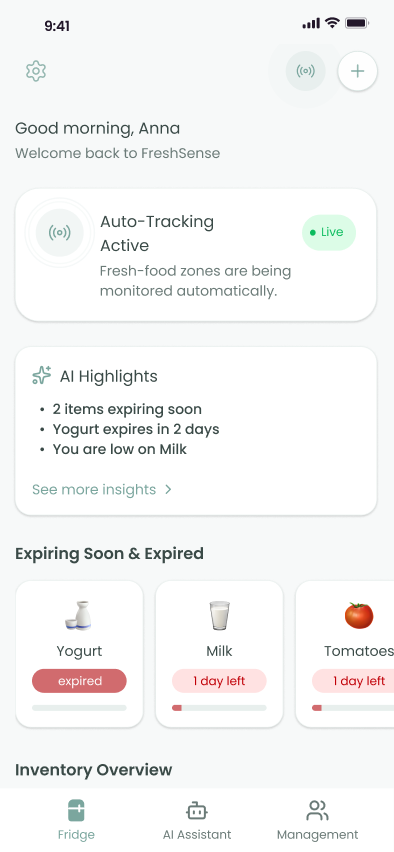
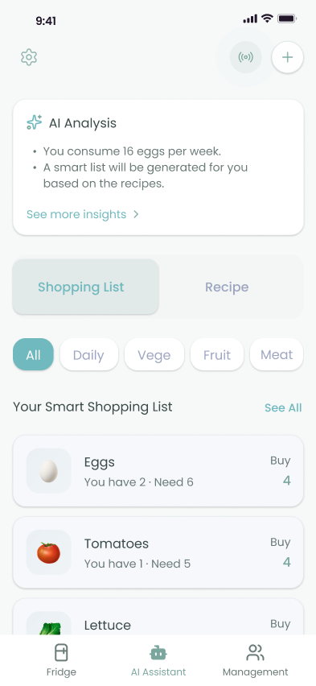
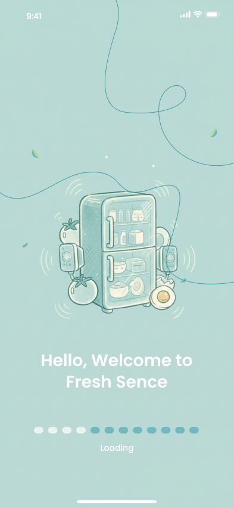
Users often don't know what's left in their refrigerator, which can lead to overbuying, longer shopping times, and waste of money and food.
I designed a b2c app that provides real-time refrigerator visibility and AI-driven shopping suggestions.
Users were impressed. SUS rating improved by 17 points and user satisfaction reached 88%.
Nearly 40% of food waste occurs in the refrigerator, mainly because we forget what food is already in it.
For workers, this waste adds up to a considerable amount: an average of $728 per person per year, or $2,900 per household per year.
But what does this actually look like in everyday life?
Let's meet one of our target users. Wayne is a people manager whose goal is to shop in under 40 minutes, knowing what's in the fridge and how much to buy. But can he answer these questions confidently and efficiently?
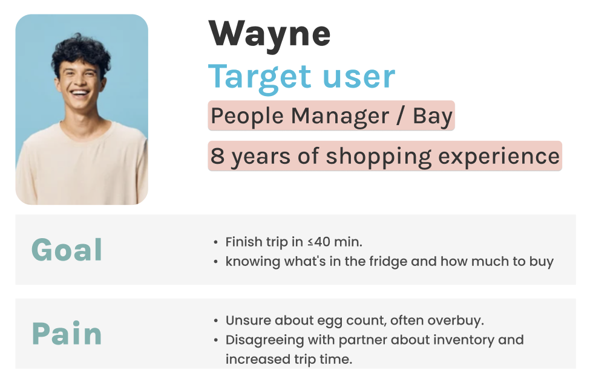
I don't know how much eggs and vegetables to buy, so I often buy too much, which can result in me wasting up to $100 a month. I use Apple Notes to keep track of my inventory, but I often forget.
The answer is no, and his current approach is not ideal.
Unfortunately, Wayne is not alone. After interviewing 15 workers from different industries, we found they all face the following common pain points:
Users often forget what's in their refrigerator, and might forget to buy some items.
Users frequently buy too many items, resulting in food and money waste.
Users often have minor arguments with their partners about inventory, which increases shopping time.
After identifying the common challenges from user interviews, I mapped each user's full grocery shopping step to understand where the most confusing and time-consuming decision-making stages were.
User story map
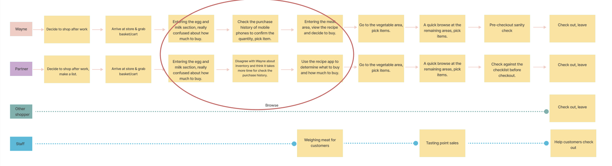
A clear pattern emerged: The longest decision-making stage for users is when they arrive at the fresh food section: the eggs, milk, and vegetable section.
Users hesitate and spend more time making decisions here for the following reasons:
Fresh ingredients spoil easily, and users worry about buying too much.
These foods are in high demand daily, and users worry about buying too little.
Users are unsure how much food they have left at home.
To help users solve their primary problem, I started with the categories that create the most confusion and waste during grocery decisions: milk, eggs, and produce.
I designed FreshSense, an AI-powered smart fridge app that works together with a small third-party sensor module.
I assumed that our sensor could reliably detect these items first. If this approach proved successful, the system could then scale to support additional food categories.
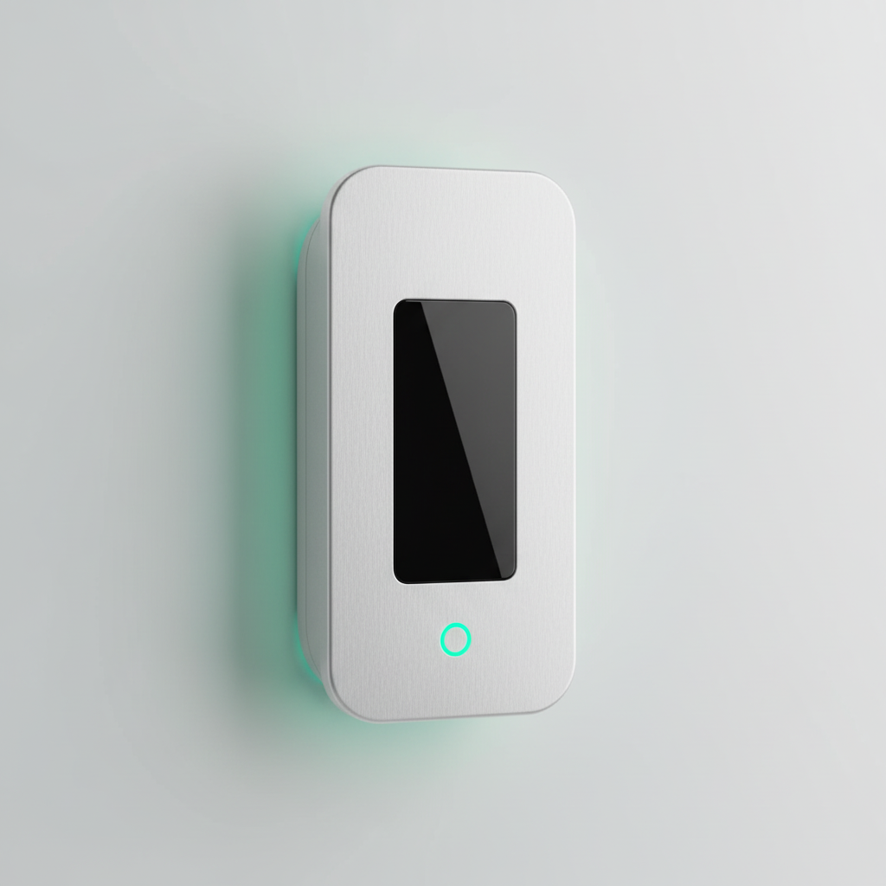
This sensor can be placed in any fridge, in fixed areas for daily, and produce.
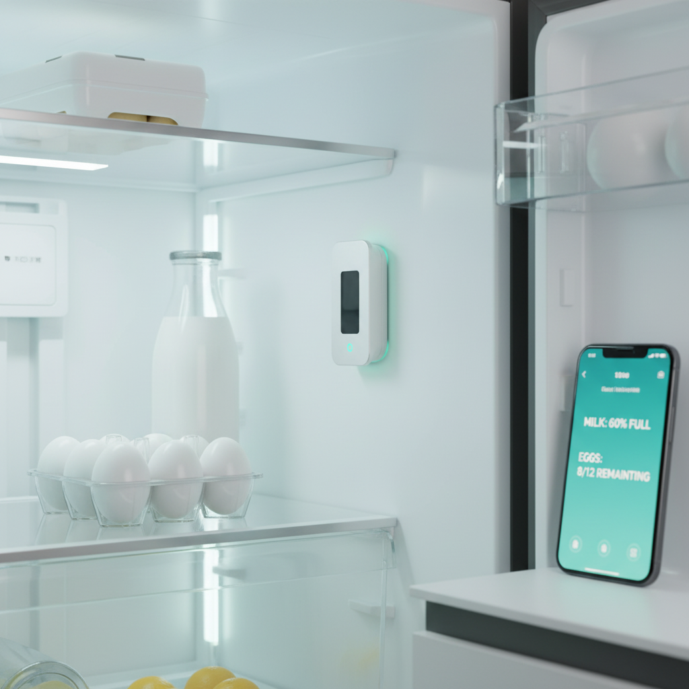
It automatically detects quantity, shelf life, and consumption patterns, and sends real-time data to the FreshSense app.
With the help of an AI-powered FreshSense app, users can ASK how many eggs, milk, and vegetables are in their fridge.
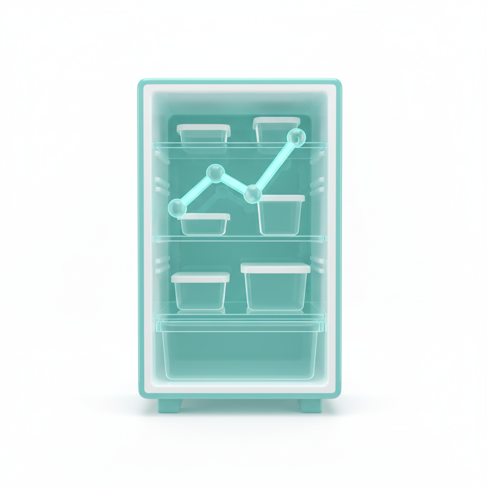
They could get ANSWERS quickly, know which is about to expire or has already expired, and can view it together with their partner.
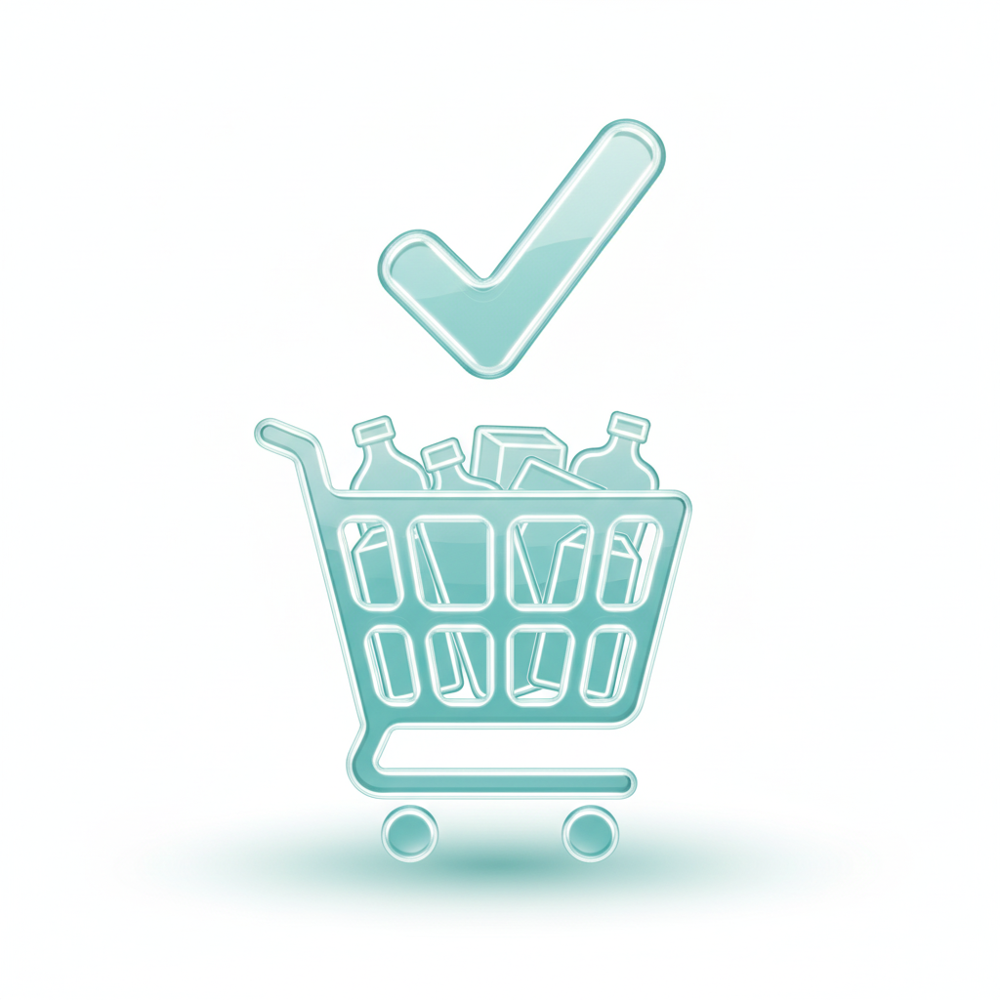
At last, they could actually take ACTION on those insights.
Round 1 testing (10 tech users)
I tested a rapidly developed AI-assisted prototype that relied on manual input (photo upload / receipt / voice).
Results:
The feedback at this stage was positive, but there may be bias due to all participants being tech workers.
So I conducted round 2 testing
(15 diverse users across professions)
When testing with
broader user groups, the picture changed dramatically:
Users described it as “too much work,” “not maintainable,” and “extra mental load”
The insights were clear:
Manual input failed both in adoption and long-term reliability.
I switched to a fixed-area sensor system that automatically tracks milk, eggs, and fresh produce.
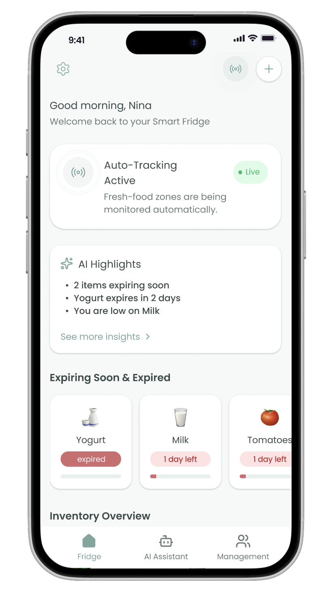
Before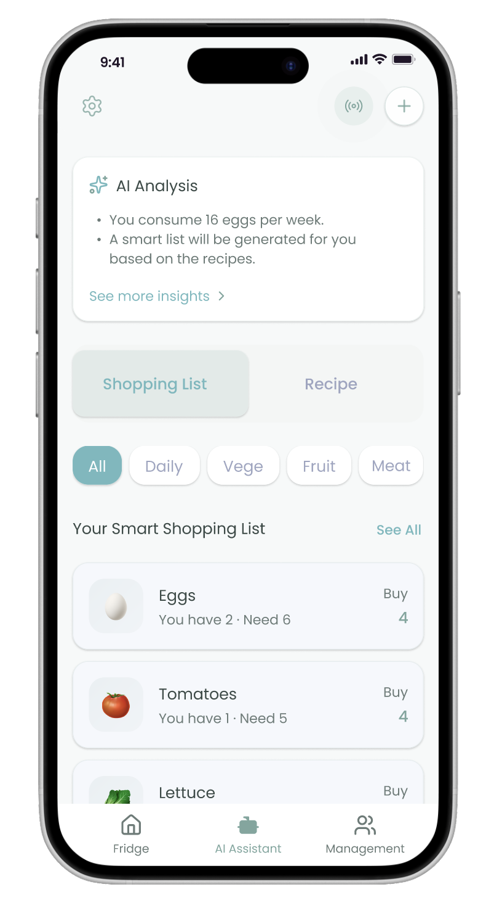
AfterThe pain point of not knowing how much to buy was repeatedly mentioned in the interview. I broke down this pain point into specific directions of AI recommendation.
I tested the first MVP testing (10 tech users).
The tests confirmed the necessity of AI-generated shopping recommendations. However, users raised questions:
How does the AI know what I need to buy?
To deepen this insight, I ran a follow-up workshop with users who had strong grocery-planning pain points. They shared a critical condition:
I'm willing to provide simple inputs, like recipes, if it helps the AI make sense.
Predictions based on their actual meal plans, not generic AI guesses.
The hybrid AI model that combines:
Actual consumption data
Household size
User-provided recipes
I added: predictions based on actual consumption data, household size, and user-provided recipes.
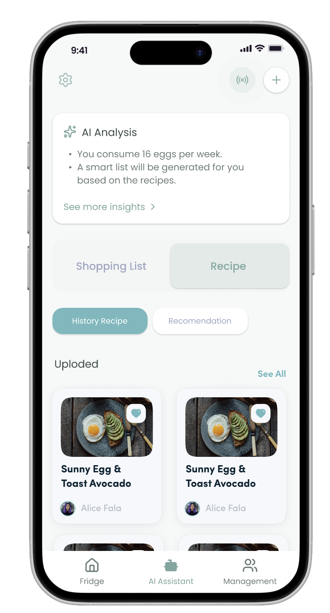
Before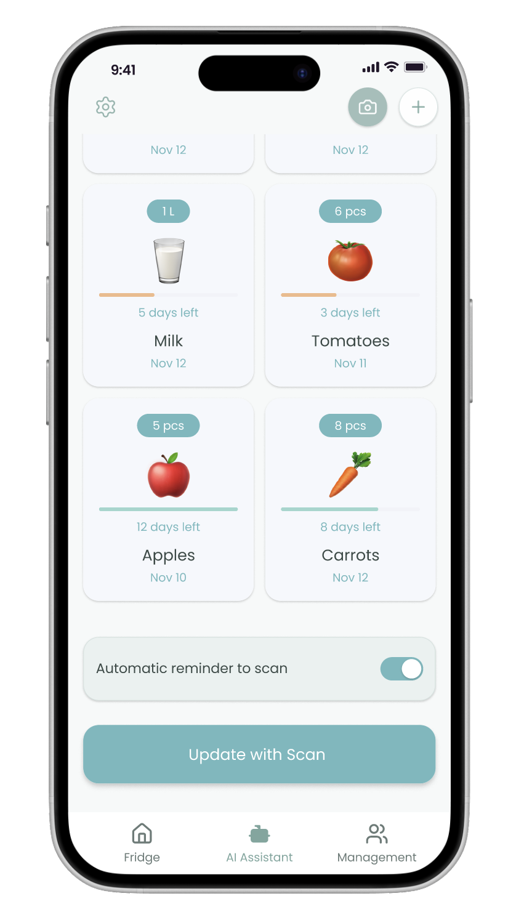
AfterProblem Solving:
This solves the problem of users not knowing the refrigerator's inventory and frequently buying too much, saving users money.
Problem Solving:
This solves the problem of users not knowing how much to buy, saving them decision-making time and reducing food waste.
Problem Solving:
This feature helps partners reduce misunderstandings and save time by providing real-time updates and automatic reminders through shared refrigerators.
Before: 70 · After: 87. This indicates the product improved from “Usable” to “Excellent”.
Our user satisfaction rate ranged from 60% to 88%.
I learned: this process taught me that building trust is more important than adding more features. Design with empathy, build with purpose.
Next, I plan to conduct broader usability testing to refine the system further, deepen our understanding of real-world behaviors over time, and ensure the product continues to feel human-centered and trustworthy.
With the core MVP validated, the next step is to expand beyond eggs, milk, and vegetables to support a wider range of household food categories.